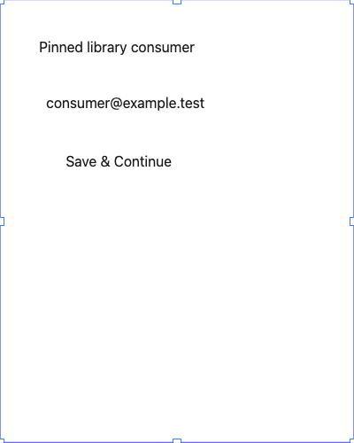
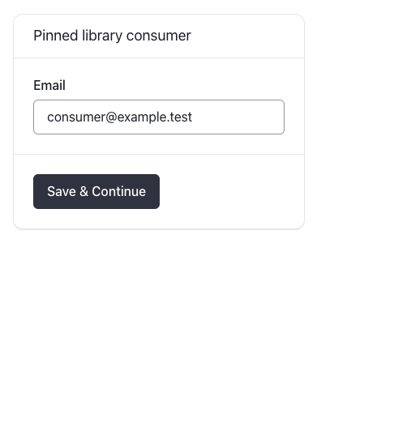
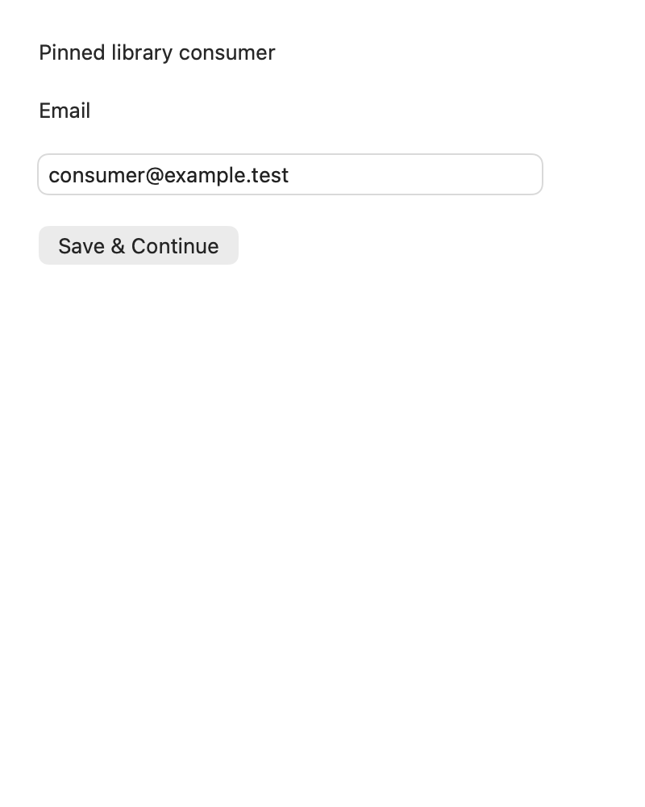

Canvas authoring
CRDT transaction + Angular/Canvas scheduling + two RAF opportunities, excluding document.get

Chrome capture uses one device pixel per CSS pixel.
SUGAR MAPLE · EXECUTABLE LIBRARY DISCOVERY · OCTOBER 2, 2026
The same pinned Button/Input/Card fixture was exercised through the actual Canvas editor, semantic DOM preview, Web Awesome 3.14.0 and a separately sandboxed SwiftUI helper. These are real rendered consumers, with explicit limits on what each path proves.
Canvas and DOM geometry match exactly for this fixture. Real runtimes receive typed props, but currently omit the complete authored geometry/style/slot contract. Issue #88 tracks that fidelity work. Arbitrary code import, full VoiceOver and product-scale performance remain unproven.
CRDT transaction + Angular/Canvas scheduling + two RAF opportunities, excluding document.get

Chrome capture uses one device pixel per CSS pixel.
immutable scene feed + two RAF opportunities

Chrome capture uses one device pixel per CSS pixel.
MessageChannel + actual Lit updates + two RAF opportunities

Chrome capture uses one device pixel per CSS pixel.
IPC + SwiftUI update + fixed 50ms snapshot scheduling + PNG encode/reply

Native capture uses two device pixels per point; displayed at its logical size.
| Path | Editability | Interaction | Fidelity | Accessibility evidence | Asset cost |
|---|---|---|---|---|---|
| Canvas authoring | Same scene; inspector props and undo | Painted controls; Layers/inspector edit them | Library identity changes; package-only styles are not projected | Canvas image plus keyboard transform handles | Existing editor bundle |
| Semantic DOM preview | Same resolved geometry; ephemeral input retained | Real HTML textbox/button | Semantic appearance; no package variant styling | Named HTML controls; isolated authoring-free feed | 3.0 KiB fixture HTML |
| Real web package | Typed props; real controls and action/change events | Real shadow-DOM controls | Actual brand variant; intrinsic sizing differs from authored scene | Named textbox/button; visible label and paragraph header | 407.3 KiB JS/CSS; 66.6 KiB Brotli |
| Trusted SwiftUI helper | Typed props; real native input/action events | Native controls in a separate helper window | Own VStack layout; Primary explicitly unsupported | Native Email field and Button; keyboard entry verified | 249.2 KiB app + 32.7 KiB launcher; system frameworks excluded |
The production editor ships 1582.3 KiB raw assets (810.8 KiB per-file Brotli), including its fonts/chrome. The experiment host adds 89.5 KiB raw assets (21.9 KiB Brotli). All shipped assets are counted; these totals are not initial-load network bytes, installed memory or a comparison against OS framework size.
The authored Card is at (20,20), 360 × 460; Input 260 × 56; Button 180 × 44. Canvas and semantic DOM have a maximum geometry delta of 0 CSS units. The real-package Card is 360 × 265.98, Input 310.00 × 70.19 and Button 156.05 × 43.00.
Primary changes the Canvas source identity without changing its recorded semantic paint styles. Web Awesome renders variant=brand; the native mapping returns an explicit unsupported error. This is a supported-contract difference, not evidence of visual equivalence.
Thirty sequential warm updates per path. These boundaries differ: they cannot rank input latency, physical presentation or FPS. The native snapshot includes an intentional 50 ms scheduling wait. The small fixture does not establish product-scale performance.
| Path | p50 | p95 | Completion boundary |
|---|---|---|---|
| Canvas authoring | 33.30 ms | 34.60 ms | CRDT transaction + Angular/Canvas scheduling + two RAF opportunities, excluding document.get |
| Semantic DOM preview | 33.20 ms | 33.30 ms | immutable scene feed + two RAF opportunities |
| Real Web Awesome | 33.30 ms | 33.50 ms | MessageChannel + actual Lit updates + two RAF opportunities |
| Trusted SwiftUI helper | 58.34 ms | 58.65 ms | IPC + SwiftUI update + fixed 50ms snapshot scheduling + PNG encode/reply |
Keep the authoritative scene, history and layout in Sugar Maple. Add an explicit supported projection contract for geometry, slots, tokens and local overrides; distinguish fallback appearance from real package appearance. Continue to reject unsupported native variants. Before arbitrary source execution, prove stronger isolation and the production native bridge boundary, including navigation and resource behavior.
The native helper is a separate real UI process; its PNG path demonstrates bounded handoff, not an interactive native surface embedded in the Canvas. Full VoiceOver, physical presentation/input latency and whole-app memory remain part of the wider release and accessibility work.
{
"recordedAt": "2026-10-02T12:23:38.779Z",
"scope": "same authored Button/Input/Card fixture and typed props; actual Canvas, DOM preview, pinned package and sandboxed SwiftUI helper",
"timingDefinitions": {
"canvas": "CRDT transaction + Angular/Canvas scheduling + two RAF opportunities, excluding document.get",
"dom": "immutable scene feed + two RAF opportunities",
"web": "MessageChannel + actual Lit updates + two RAF opportunities",
"native": "IPC + SwiftUI update + fixed 50ms snapshot scheduling + PNG encode/reply"
},
"limitations": [
"Timings have different boundaries and cannot rank input latency/FPS.",
"Native snapshot includes an intentional 50ms scheduling wait.",
"Web/native POC consumes props, not complete authored layout/styles/slots.",
"Human native AX/event evidence is separate; no full VoiceOver audit.",
"No whole-product memory or production distribution comparison is claimed."
],
"webARIA": "- paragraph: Pinned library consumer\n- text: Email\n- textbox \"Email\":\n - /placeholder: Your email\n - text: consumer@example.test\n- button \"Save & Continue\"",
"DOMARIA": "- text: Pinned library consumer\n- textbox \"Email\":\n - /placeholder: Your email\n - text: consumer@example.test\n- button \"Save & Continue\"",
"CanvasARIA": "- img \"Design canvas. Select layers in the Layers panel; arrow keys move selected layers.\"\n- button \"Resize selected element from top left\"\n- button \"Resize selected element from top\"\n- button \"Resize selected element from top right\"\n- button \"Resize selected element from right\"\n- button \"Resize selected element\"\n- button \"Resize selected element from bottom\"\n- button \"Resize selected element from bottom left\"\n- button \"Resize selected element from left\"\n- button \"Rotate selected element\""
}